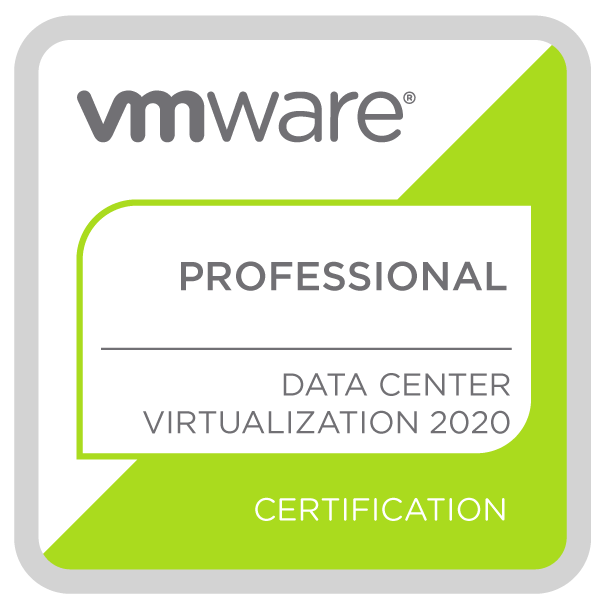
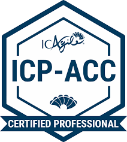

Welcome to My Website
This site showcases my work, education, and interests.




I'm an IT professional who focuses on designing and building value-driven IT systems that foster success for businesses and their customers.
This site showcases my work, education, and interests.
| Company | Position | Duration | Location | Details |
|---|---|---|---|---|
 Breezeline Breezeline |
VDI Systems Engineer | Sep 2023 - Present | United States · Remote |
|
| Senior Systems Engineer | Sep 2016 - Sep 2023 | Alexandria, VA, USA |
|
|
| Network Engineer | Oct 2015 - Sep 2016 | United States |
|
 University of Virginia: School of Continuing and Professional Studies
University of Virginia: School of Continuing and Professional Studies
Bachelor of Interdisciplinary Studies (BIS), Information Technology 2023 - 2026 |
 Northern Virginia Community College
Northern Virginia Community College
Associate of Science (AS), Information Technology 2018 - 2020 |
| Subject | Resources | Learning Method | Tools |
|---|---|---|---|
| Python Programming | Python.org, Automate the Boring Stuff, Real Python | Self-Study | VSCode, Jupyter Notebook, Python 3.9 |
| Cloud Computing with Azure | Microsoft Learn, Pluralsight, A Cloud Guru | Self-Study | Azure Portal, Visual Studio Code |
| DevOps Practices | Udemy, DevOps Handbook | Self-Study | Git, Jenkins, Docker, Kubernetes |
| Basics of Web Design | Web Development and Design Foundations with HTML5, 10th Edition | UVA | Visual Studio Code, Git, GitHub Pages |
| Task | Details | Progress |
|---|---|---|
| Deploy vSphere 8 | Setting up a new vSphere 8 environment with DPU-backed infrastructure. | |
| Implement Agile Practices | Introducing Kanban and retrospectives to improve team productivity. | |
| Migrate to Teams | Leading the migration from Skype for Business to Teams with Direct Routing. |
 The Civil War & Reconstruction a History Podcast
- Rich & Tracy weave a spellbinding historical narrative from the beginning rumblings of secession and through the shifting battlefields.
The Civil War & Reconstruction a History Podcast
- Rich & Tracy weave a spellbinding historical narrative from the beginning rumblings of secession and through the shifting battlefields.
 History of the Second World War Podcast
- This podcast tells the story of the Second World War chronologically in the form of weekly episodes.
History of the Second World War Podcast
- This podcast tells the story of the Second World War chronologically in the form of weekly episodes.
 My Brother, My Brother and Me
- An advice podcast for the modern era, where the McElroy brothers take your questions and turn them into wisdom.
My Brother, My Brother and Me
- An advice podcast for the modern era, where the McElroy brothers take your questions and turn them into wisdom.
 Speedruns From the Crypt
- A show filled with horror as we take you through a block of some of our scariest speedruns! Join us every other Wednesday night, at 10pm EST.
Speedruns From the Crypt
- A show filled with horror as we take you through a block of some of our scariest speedruns! Join us every other Wednesday night, at 10pm EST.
 AntsCanada
- Discover the world of ant keeping with engaging and educational content.
AntsCanada
- Discover the world of ant keeping with engaging and educational content.
 BullyJuice
- My personal in-home trainer since 2020, with workouts that cater to all fitness levels.
BullyJuice
- My personal in-home trainer since 2020, with workouts that cater to all fitness levels.
 Rock, Paper, Scissors and Other Stories
- Maxim Osipov, a doctor and one of Russia’s best contemporary writers, offers stories of great subtlety and insight, drawing from his experiences in medicine.
Rock, Paper, Scissors and Other Stories
- Maxim Osipov, a doctor and one of Russia’s best contemporary writers, offers stories of great subtlety and insight, drawing from his experiences in medicine.